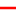

<!doctype html>
<html lang="en">
    <head>
        <meta charset="utf-8">
        <meta http-equiv="X-UA-Compatible" content="IE=edge">
        <meta name="viewport" content="initial-scale=1,user-scalable=no,maximum-scale=1,width=device-width">
        <meta name="mobile-web-app-capable" content="yes">
        <meta name="apple-mobile-web-app-capable" content="yes">
        <link rel="stylesheet" href="css/leaflet.css">
        <link rel="stylesheet" href="css/qgis2web.css"><link rel="stylesheet" href="css/fontawesome-all.min.css">
        <link rel="stylesheet" href="css/leaflet-measure.css">
        <style>
        html, body, #map {
            width: 100%;
            height: 100%;
            padding: 0;
            margin: 0;
        }
        </style>
        <title></title>
    </head>
    <body>
        <div id="map">
        </div>
        <script src="js/qgis2web_expressions.js"></script>
        <script src="js/leaflet.js"></script>
        <script src="js/leaflet-svg-shape-markers.min.js"></script>
        <script src="js/leaflet.rotatedMarker.js"></script>
        <script src="js/leaflet.pattern.js"></script>
        <script src="js/leaflet-hash.js"></script>
        <script src="js/Autolinker.min.js"></script>
        <script src="js/rbush.min.js"></script>
        <script src="js/labelgun.min.js"></script>
        <script src="js/labels.js"></script>
        <script src="js/leaflet-measure.js"></script>
        <script src="data/pipe_nonetype_1.js"></script>
        <script src="data/mirniy_tssource_2.js"></script>
        <script>
        var highlightLayer;
        function highlightFeature(e) {
            highlightLayer = e.target;

            if (e.target.feature.geometry.type === 'LineString') {
              highlightLayer.setStyle({
                color: '#ffff00',
              });
            } else {
              highlightLayer.setStyle({
                fillColor: '#ffff00',
                fillOpacity: 1
              });
            }
        }
        var map = L.map('map', {
            zoomControl:true, maxZoom:28, minZoom:1
        }).fitBounds([[62.51793676923864,113.86617275815075],[62.56573277998108,114.08297214408395]]);
		map.options.crs = L.CRS.EPSG3395;
        var hash = new L.Hash(map);
        map.attributionControl.setPrefix('<a href="https://github.com/tomchadwin/qgis2web" target="_blank">qgis2web</a> &middot; <a href="https://leafletjs.com" title="A JS library for interactive maps">Leaflet</a> &middot; <a href="https://qgis.org">QGIS</a>');
        var autolinker = new Autolinker({truncate: {length: 30, location: 'smart'}});
        var measureControl = new L.Control.Measure({
            position: 'topleft',
            primaryLengthUnit: 'meters',
            secondaryLengthUnit: 'kilometers',
            primaryAreaUnit: 'sqmeters',
            secondaryAreaUnit: 'hectares'
        });
        measureControl.addTo(map);
        document.getElementsByClassName('leaflet-control-measure-toggle')[0]
        .innerHTML = '';
        document.getElementsByClassName('leaflet-control-measure-toggle')[0]
        .className += ' fas fa-ruler';
        var bounds_group = new L.featureGroup([]);
        function setBounds() {
        }
        map.createPane('pane_YandexMap_0');
        map.getPane('pane_YandexMap_0').style.zIndex = 400;
        var layer_YandexMap_0 = L.tileLayer('http://vec01.maps.yandex.net/tiles?l=map&x={x}&y={y}&z={z}', {
            pane: 'pane_YandexMap_0',
            opacity: 1.0,
            attribution: '',
            minZoom: 1,
            maxZoom: 28,
            minNativeZoom: 0,
            maxNativeZoom: 18
        });
        layer_YandexMap_0;
        map.addLayer(layer_YandexMap_0);
        function pop_pipe_nonetype_1(feature, layer) {
            layer.on({
                mouseout: function(e) {
                    for (i in e.target._eventParents) {
                        e.target._eventParents[i].resetStyle(e.target);
                    }
                },
                mouseover: highlightFeature,
            });
            var popupContent = '<table>\
                    <tr>\
                        <th scope="row">Dу</th>\
                        <td>' + (feature.properties['Dext'] !== null ? autolinker.link(feature.properties['Dext'].toLocaleString()) : '') + '</td>\
                    </tr>\
                    <tr>\
                        <th scope="row">Длина</th>\
                        <td>' + (feature.properties['L'] !== null ? autolinker.link(feature.properties['L'].toLocaleString()) : '') + '</td>\
                    </tr>\
                </table>';
            layer.bindPopup(popupContent, {maxHeight: 400});
        }

        function style_pipe_nonetype_1_0() {
            return {
                pane: 'pane_pipe_nonetype_1',
                opacity: 1,
                color: 'rgba(255,5,1,1.0)',
                dashArray: '',
                lineCap: 'square',
                lineJoin: 'bevel',
                weight: 3.0,
                fillOpacity: 0,
                interactive: true,
            }
        }
        map.createPane('pane_pipe_nonetype_1');
        map.getPane('pane_pipe_nonetype_1').style.zIndex = 401;
        map.getPane('pane_pipe_nonetype_1').style['mix-blend-mode'] = 'normal';
        var layer_pipe_nonetype_1 = new L.geoJson(json_pipe_nonetype_1, {
            attribution: '',
            interactive: true,
            dataVar: 'json_pipe_nonetype_1',
            layerName: 'layer_pipe_nonetype_1',
            pane: 'pane_pipe_nonetype_1',
            onEachFeature: pop_pipe_nonetype_1,
            style: style_pipe_nonetype_1_0,
        });
        bounds_group.addLayer(layer_pipe_nonetype_1);
        map.addLayer(layer_pipe_nonetype_1);
        function pop_mirniy_tssource_2(feature, layer) {
            layer.on({
                mouseout: function(e) {
                    for (i in e.target._eventParents) {
                        e.target._eventParents[i].resetStyle(e.target);
                    }
                },
                mouseover: highlightFeature,
            });
            var popupContent = '<table>\
                    <tr>\
                        <th scope="row">Название</th>\
                        <td>' + (feature.properties['name'] !== null ? autolinker.link(feature.properties['name'].toLocaleString()) : '') + '</td>\
                    </tr>\
                </table>';
            layer.bindPopup(popupContent, {maxHeight: 400});
        }

        function style_mirniy_tssource_2_0() {
            return {
                pane: 'pane_mirniy_tssource_2',
                radius: 10.0,
                opacity: 1,
                color: 'rgba(35,35,35,1.0)',
                dashArray: '',
                lineCap: 'butt',
                lineJoin: 'miter',
                weight: 1,
                fill: true,
                fillOpacity: 1,
                fillColor: 'rgba(255,0,0,1.0)',
                interactive: true,
            }
        }
        map.createPane('pane_mirniy_tssource_2');
        map.getPane('pane_mirniy_tssource_2').style.zIndex = 402;
        map.getPane('pane_mirniy_tssource_2').style['mix-blend-mode'] = 'normal';
        var layer_mirniy_tssource_2 = new L.geoJson(json_mirniy_tssource_2, {
            attribution: '',
            interactive: true,
            dataVar: 'json_mirniy_tssource_2',
            layerName: 'layer_mirniy_tssource_2',
            pane: 'pane_mirniy_tssource_2',
            onEachFeature: pop_mirniy_tssource_2,
            pointToLayer: function (feature, latlng) {
                var context = {
                    feature: feature,
                    variables: {}
                };
                return L.shapeMarker(latlng, style_mirniy_tssource_2_0(feature));
            },
        });
        bounds_group.addLayer(layer_mirniy_tssource_2);
        map.addLayer(layer_mirniy_tssource_2);
        var baseMaps = {};
        L.control.layers(baseMaps,{' mirniy_ts source': layer_mirniy_tssource_2,' pipe_nonetype': layer_pipe_nonetype_1,"Yandex Map": layer_YandexMap_0,},{collapsed:false}).addTo(map);
        setBounds();
        var i = 0;
        layer_mirniy_tssource_2.eachLayer(function(layer) {
            var context = {
                feature: layer.feature,
                variables: {}
            };
            layer.bindTooltip((layer.feature.properties['name'] !== null?String('<div style="color: #000000; font-size: 10pt; font-family: \'MS Shell Dlg 2\', sans-serif;">' + layer.feature.properties['name']) + '</div>':''), {permanent: true, offset: [-0, -16], className: 'css_mirniy_tssource_2'});
            labels.push(layer);
            totalMarkers += 1;
              layer.added = true;
              addLabel(layer, i);
              i++;
        });
        resetLabels([layer_pipe_nonetype_1,layer_mirniy_tssource_2]);
        map.on("zoomend", function(){
            resetLabels([layer_pipe_nonetype_1,layer_mirniy_tssource_2]);
        });
        map.on("layeradd", function(){
            resetLabels([layer_pipe_nonetype_1,layer_mirniy_tssource_2]);
        });
        map.on("layerremove", function(){
            resetLabels([layer_pipe_nonetype_1,layer_mirniy_tssource_2]);
        });
        </script>
    </body>
</html>
